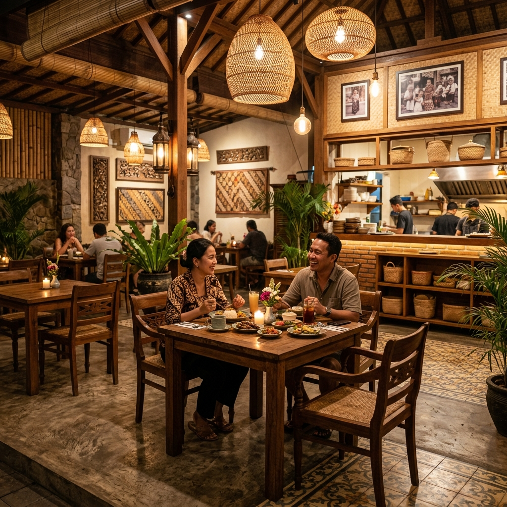
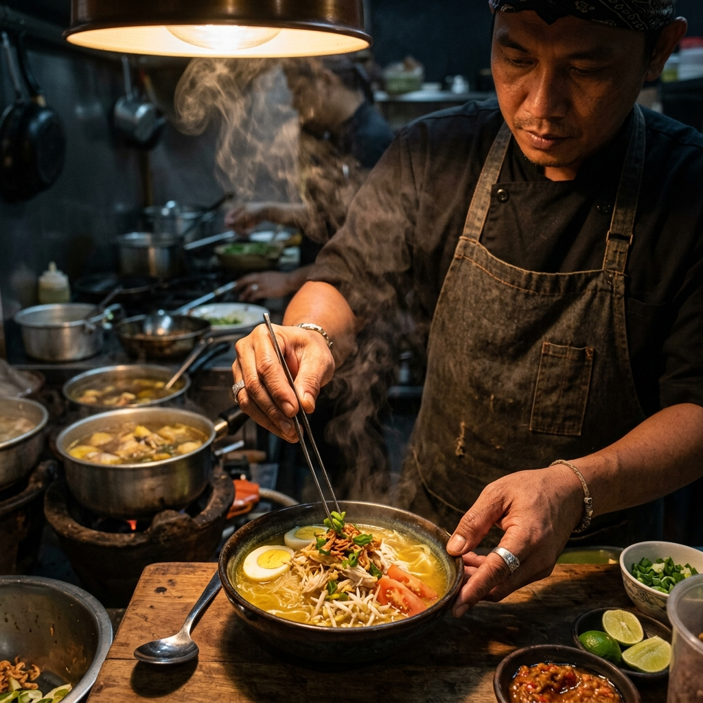

Citarasa Soto Lamongan otentik di jantung kota Yogyakarta. Dibuat dengan kuah kuning kaya rempah yang gurih, taburan koya legendaris yang lezat, dan disajikan hangat untuk menghangatkan hari Anda.
Warung Soto Yogyakarta "Cak Sumalik" memadukan tradisi kuliner Lamongan yang tersohor dengan sentuhan keramahan lokal Yogyakarta. Kami berkomitmen untuk selalu mempertahankan resep asli warisan keluarga yang diolah dengan teliti.
Keunikan soto kami terletak pada keseimbangan rasa kuahnya yang ringan namun kaya kaldu ayam kampung, serta taburan Koya gurih yang melimpah yang memberikan kepekatan rasa tersendiri di setiap suapannya.

Warung Bersih & Estetik

Dimasak Sepenuh Hati
Jl. Veteran, Pandeyan, Umbulharjo, Yogyakarta
Senin - Minggu: 10:00 - 22:00 WIB
085806030588
caksumalik@email.com